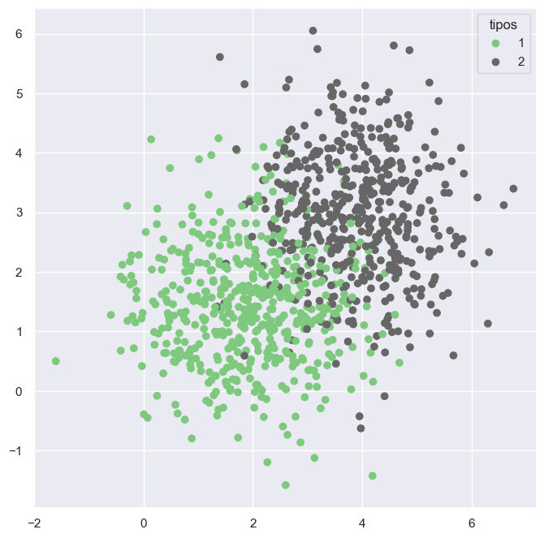

UNIDAD 3.2 Jupyter notebooks#
Jupyter Notebooks son una forma bastante interactiva para programar en Python (funciona también en R!).
Texto#
Permite insertar texto y formatearlo:
Negrita
Cursiva
Colores
Subrayado
Podemos utilizar \(\LaTeX\) para escribir fórumulas:
\(Y = AL^{\alpha}K^{\beta}\)
3. Asignar jerarquías para mejor organización del código:#
1. Librerías#
2. Importar datos#
2.1. Datos crimen#
2.2. Datos UPC#
3. Análisis#
Finalmente, podemos insertar imágenes:

Todo lo anterior se combina con código, tablas y figuras generadas en Python!
Ejemplo de código, datos y figuras.#
import numpy as np
import pandas as pd
import matplotlib.pyplot as plt
import seaborn as sns
sns.set_theme()
%matplotlib inline
n = 1000
c = np.random.choice([1,2],n)
x = np.random.normal(0,1,n) + c*2
y = np.random.normal(0,1,n) + c*1.5
array = np.array([x,y,c])
array.shape
(3, 1000)
df = pd.DataFrame(array, index=['x','y','c']).T
df.head(10)
| x | y | c | |
|---|---|---|---|
| 0 | 4.210027 | 2.086673 | 2.0 |
| 1 | 2.394603 | 2.695415 | 2.0 |
| 2 | 3.208957 | 3.703739 | 2.0 |
| 3 | 3.955833 | 3.728887 | 2.0 |
| 4 | 3.916467 | 2.901336 | 2.0 |
| 5 | 3.003922 | 3.542764 | 2.0 |
| 6 | 3.031031 | 0.819962 | 1.0 |
| 7 | 3.251471 | 3.053333 | 2.0 |
| 8 | 1.837008 | 1.545007 | 1.0 |
| 9 | 1.849713 | 1.051816 | 1.0 |
fig = plt.figure(figsize=(8,8))
scat = plt.scatter(x,y, c=c, cmap='Accent')
legend1 = plt.legend(*scat.legend_elements(), title="tipos")
plt.show()
